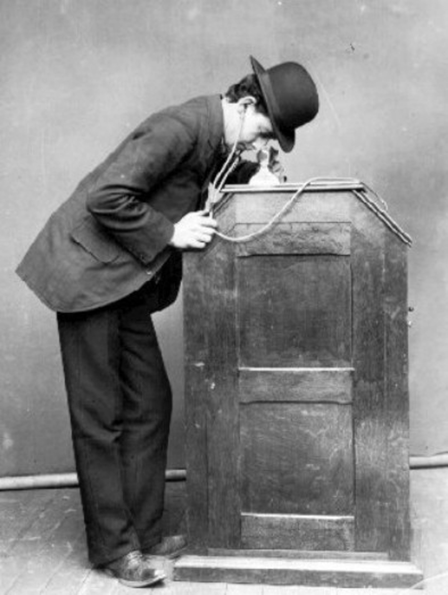
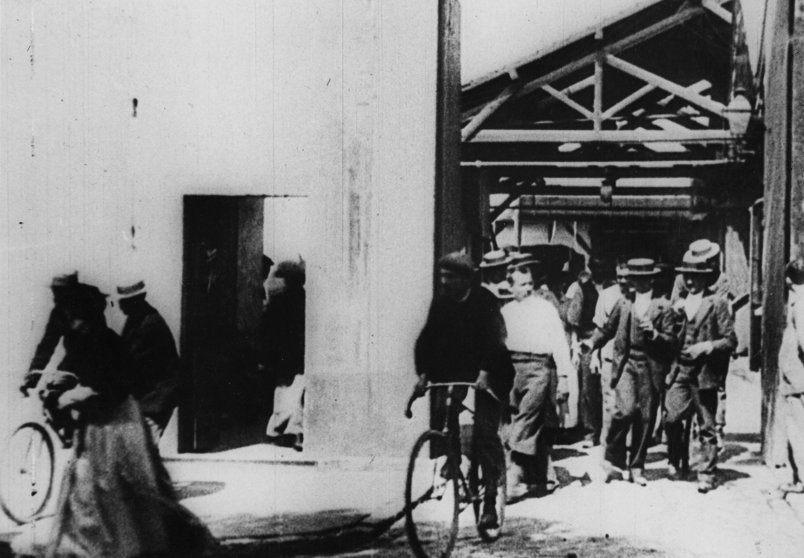
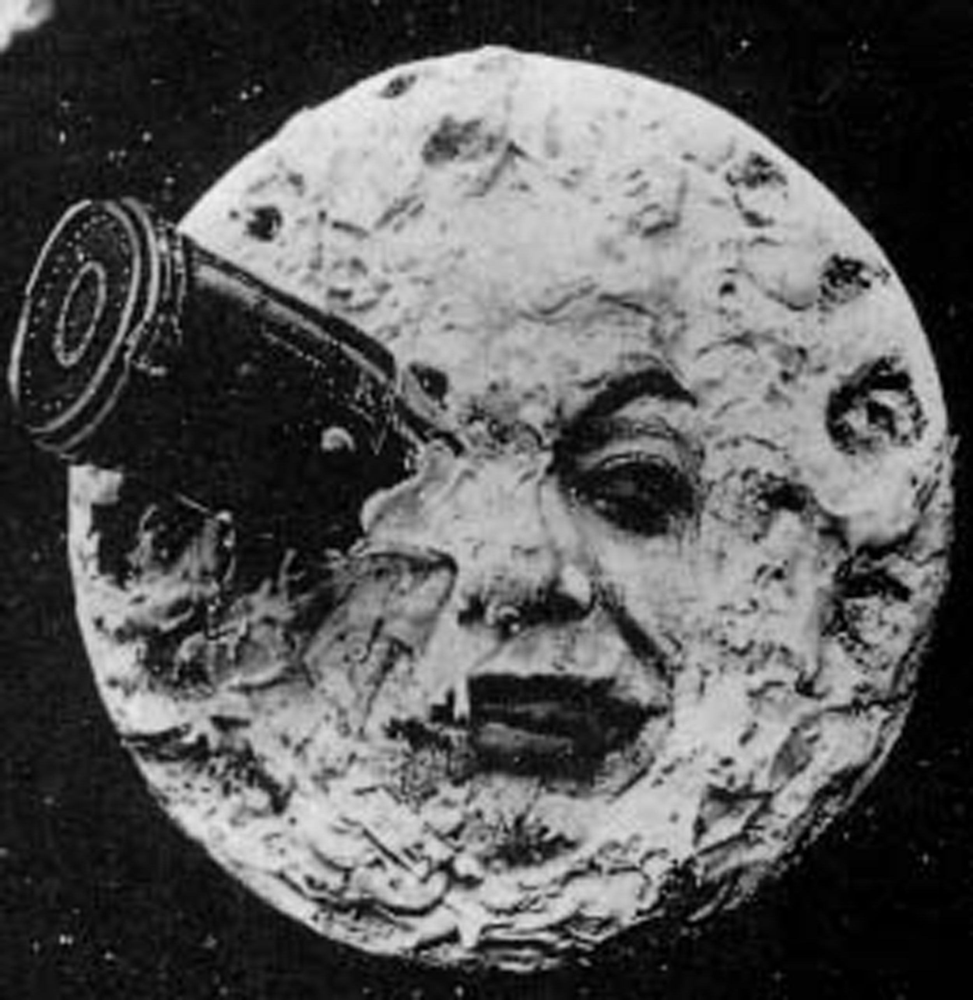
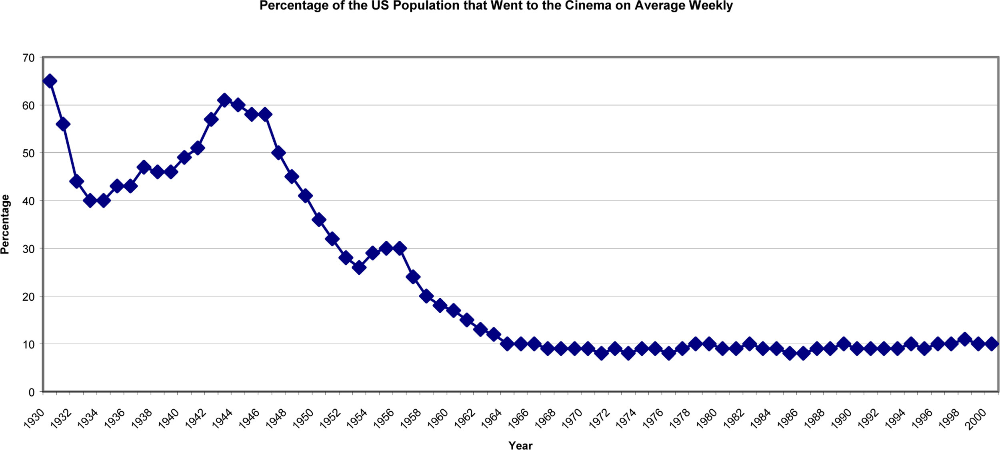

The movie industry as we know it today originated in the early 19th century through a series of technological developments: the creation of photography, the discovery of the illusion of motion by combining individual still images, and the study of human and animal locomotion. The history presented here begins at the culmination of these technological developments, where the idea of the motion picture as an entertainment industry first emerged. Since then, the industry has seen extraordinary transformations, some driven by the artistic visions of individual participants, some by commercial necessity, and still others by accident. The history of the cinema is complex, and for every important innovator and movement listed here, others have been left out. Nonetheless, after reading this section you will understand the broad arc of the development of a medium that has captured the imaginations of audiences worldwide for over a century.
While the experience of watching movies on smartphones may seem like a drastic departure from the communal nature of film viewing as we think of it today, in some ways the small-format, single-viewer display is a return to film’s early roots. In 1891, the inventor Thomas Edison, together with William Dickson, a young laboratory assistant, came out with what they called the kinetoscopeThe camera used to capture images for the Edison kinetograph., a device that would become the predecessor to the motion picture projector. The kinetoscope was a cabinet with a window through which individual viewers could experience the illusion of a moving image.Europe 1789–1914: Encyclopedia of the Age of Industry and Empire, vol. 1, s.v. “Cinema,” by Alan Williams, Gale Virtual Reference Library.“The Kinetoscope,” British Movie Classics, http://www.britishmovieclassics.com/thekinetoscope.php. A perforated celluloid film stripA thin, transparent type of film that was coated with light-sensitive chemicals to record images. with a sequence of images on it was rapidly spooled between a lightbulb and a lens, creating the illusion of motion.Britannica Online, s.v. “Kinetoscope,” http://www.britannica.com/EBchecked/topic/318211/Kinetoscope/318211main/Article. The images viewers could see in the kinetoscope captured events and performances that had been staged at Edison’s film studio in East Orange, New Jersey, especially for the Edison kinetographThomas Edison’s early motion picture display that allowed a single viewer to experience the illusion of a moving image. (the camera that produced kinetoscope film sequences): circus performances, dancing women, cockfights, boxing matches, and even a tooth extraction by a dentist.David Robinson, From Peep Show to Palace: The Birth of American Film (New York: Columbia University Press, 1994), 43–44.
Figure 8.2
The Edison kinetoscope.
As the kinetoscope gained popularity, the Edison Company began installing machines in hotel lobbies, amusement parks, and penny arcades, and soon kinetoscope parlors—where customers could pay around 25 cents for admission to a bank of machines—had opened around the country. However, when friends and collaborators suggested that Edison find a way to project his kinetoscope images for audience viewing, he apparently refused, claiming that such an invention would be a less profitable venture.Britannica Online. s.v. “History of the Motion Picture.” http://www.britannica.com/EBchecked/topic/394161/history-of-the-motion picture; Robinson, From Peep Show to Palace, 45, 53.
Because Edison hadn’t secured an international patent for his invention, variations of the kinetoscope were soon being copied and distributed throughout Europe. This new form of entertainment was an instant success, and a number of mechanics and inventors, seeing an opportunity, began toying with methods of projecting the moving images onto a larger screen. However, it was the invention of two brothers, Auguste and Louis Lumière—photographic goods manufacturers in Lyon, France—that saw the most commercial success. In 1895, the brothers patented the CinématographeLightweight film projector, created by Auguste and Louis Lumière, that also functioned as a camera and printer, and allowed multiple people to view moving images at the same time. (from which we get the term cinema), a lightweight film projector that also functioned as a camera and printer. Unlike the Edison kinetograph, the Cinématographe was lightweight enough for easy outdoor filming, and over the years the brothers used the camera to take well over 1,000 short films, most of which depicted scenes from everyday life. In December 1895, in the basement lounge of the Grand Café, Rue des Capucines in Paris, the Lumières held the world’s first ever commercial film screening, a sequence of about 10 short scenes, including the brother’s first film, Workers Leaving the Lumière Factory, a segment lasting less than a minute and depicting workers leaving the family’s photographic instrument factory at the end of the day, as shown in the still frame here in Figure 8.3.Encyclopedia of the Age of Industry and Empire, s.v. “Cinema.”
Believing that audiences would get bored watching scenes that they could just as easily observe on a casual walk around the city, Louis Lumière claimed that the cinema was “an invention without a future,”Louis Menand, “Gross Points,” New Yorker, February 7, 2005, http://www.newyorker.com/archive/2005/02/07/050207crat_atlarge. but a demand for motion pictures grew at such a rapid rate that soon representatives of the Lumière company were traveling throughout Europe and the world, showing half-hour screenings of the company’s films. While cinema initially competed with other popular forms of entertainment—circuses, vaudeville acts, theater troupes, magic shows, and many others—eventually it would supplant these various entertainments as the main commercial attraction.Louis Menand, “Gross Points,” New Yorker, February 7, 2005, http://www.newyorker.com/archive/2005/02/07/050207crat_atlarge. Within a year of the Lumières’ first commercial screening, competing film companies were offering moving-picture acts in music halls and vaudeville theaters across Great Britain. In the United States, the Edison Company, having purchased the rights to an improved projecter that they called the VitascopeLarge-screen motion projector manufactured by Thomas Edison., held their first film screening in April 1896 at Koster and Bial’s Music Hall in Herald Square, New York City.
Figure 8.3
Workers Leaving the Lumière Factory: One of the first films viewed by an audience.
Film’s profound impact on its earliest viewers is difficult to imagine today, inundated as many are by video images. However, the sheer volume of reports about the early audience’s disbelief, delight, and even fear at what they were seeing suggests that viewing a film was an overwhelming experience for many. Spectators gasped at the realistic details in films such as Robert Paul’s Rough Sea at Dover, and at times people panicked and tried to flee the theater during films in which trains or moving carriages sped toward the audience.David Robinson, From Peep Show to Palace: The Birth of American Film (New York: Columbia University Press, 1994), 63. Even the public’s perception of film as a medium was considerably different from the contemporary understanding; the moving image was an improvement upon the photograph—a medium with which viewers were already familiar—and this is perhaps why the earliest films documented events in brief segments but didn’t tell stories. During this “novelty period” of cinema, audiences were more interested by the phenomenon of the film projector itself, so vaudeville halls advertised the kind of the projector they were using (for example, “The Vitascope—Edison’s Latest Marvel”)Andrei Ionut Balcanasu, Sergey V. Smagin, and Stephanie K. Thrift, “Edison and the Lumiere Brothers,” Cartoons and Cinema of the 20th Century, http://library.thinkquest.org/C0118600/index.phtml?menu=en%3B1%3Bci1001.html., rather than the names of the films.Britannica Online. s.v. “History of the Motion Picture.” http://www.britannica.com/EBchecked/topic/394161/history-of-the-motion picture
By the close of the 19th century, as public excitement over the moving picture’s novelty gradually wore off, filmmakers were also beginning to experiment with film’s possibilities as a medium in itself (not simply, as it had been regarded up until then, as a tool for documentation, analogous to the camera or the phonograph). Technical innovations allowed filmmakers like Parisian cinema owner Georges Méliès to experiment with special effects that produced seemingly magical transformations on screen: flowers turned into women, people disappeared with puffs of smoke, a man appeared where a woman had just been standing, and other similar tricks.David Robinson, From Peep Show to Palace: The Birth of American Film (New York: Columbia University Press, 1994), 74–75; Encyclopedia of the Age of Industry and Empire, s.v. “Cinema.”
Not only did Méliès, a former magician, invent the “trick filmFilms that contained techniques, originally used by Georges Méliès, such as stop-motion photography that made objects disappear, reappear, and transform.,” which producers in England and the United States began to imitate, but he was also the one to tranform cinema into the narrative medium it is today. Whereas before, filmmakers had only ever created single-shot films that lasted a minute or less, Méliès began joining these short films together to create stories. His 30-scene Trip to the Moon (1902), a film based on a Jules Verne novel, may have been the most widely seen production in cinema’s first decade.David Robinson, From Peep Show to Palace: The Birth of American Film (New York: Columbia University Press, 1994), 441. However, Méliès never developed his technique beyond treating the narrative film as a staged theatrical performance; his camera, representing the vantage point of an audience facing a stage, never moved during the filming of a scene. In 1912, Méliès released his last commercially successful production, The Conquest of the Pole, and from then on, he lost audiences to filmmakers who were experimenting with more sophisticated techniques.Encyclopedia of Communication and Information (New York: MacMillan Reference USA, 2002), s.v. “Méliès, Georges,” by Ted C. Jones, Gale Virtual Reference Library.
Figure 8.4
Georges Méliès’ Trip to the Moon was one of the first films to incorporate fantasy elements and to use “trick” filming techniques, both of which heavily influenced future filmmakers.
One of these innovative filmmakers was Edwin S. Porter, a projectionist and engineer for the Edison Company. Porter’s 12-minute film, The Great Train Robbery (1903), broke with the stagelike compositions of Méliès-style films through its use of editing, camera pans, rear projections, and diagonally composed shots that produced a continuity of action. Not only did The Great Train Robbery establish the realistic narrative as a standard in cinema, it was also the first major box-office hit. Its success paved the way for the growth of the film industry, as investors, recognizing the motion picture’s great moneymaking potential, began opening the first permanent film theaters around the country.
Known as nickelodeonsThe earliest motion picture theaters, often housed in converted storefronts. because of their 5 cent admission charge, these early motion picture theaters, often housed in converted storefronts, were especially popular among the working class of the time, who couldn’t afford live theater. Between 1904 and 1908, around 9,000 nickelodeons appeared in the United States. It was the nickelodeon’s popularity that established film as a mass entertainment medium.Dictionary of American History, 3rd ed., s.v. “Nickelodeon,” by Ryan F. Holznagel, Gale Virtual Reference Library.
As the demand for motion pictures grew, production companies were created to meet it. At the peak of nickelodeon popularity in 1910,Britannica Online, s.v. “nickelodeon.” there were 20 or so major motion picture companies in the United States. However, heated disputes often broke out among these companies over patent rights and industry control, leading even the most powerful among them to fear fragmentation that would loosen their hold on the market.Raymond Fielding, A Technological History of Motion Pictures and Television (Berkeley: California Univ. Press, 1967) 21. Because of these concerns, the 10 leading companies—including Edison, Biograph, Vitagraph, and others—formed the Motion Picture Patents Company (MPPC)A monopolistic trade agreement among the earliest major motion picture studios. in 1908. The MPPC was a trade group that pooled the most significant motion picture patents and established an exclusive contract between these companies and the Eastman Kodak Company as a supplier of film stock. Also known as the Trust, the MPPC’s goal was to standardize the industry and shut out competition through monopolistic control. Under the Trust’s licensing system, only certain licensed companies could participate in the exchange, distribution, and production of film at different levels of the industry—a shut-out tactic that eventually backfired, leading the excluded, independent distributors to organize in opposition to the Trust.Raymond Fielding, A Technological History of Motion Pictures and Television (Berkeley: California Univ. Press, 1967) 21; David Robinson, From Peep Show to Palace: The Birth of American Film (New York: Columbia University Press, 1994), 101–102.
In these early years, theaters were still running single-reel films, which came at a standard length of 1,000 feet, allowing for about 16 minutes of playing time. However, companies began to import multiple-reel films from European producers around 1907, and the format gained popular acceptance in the United States in 1912 with Louis Mercanton’s highly successful Queen Elizabeth, a three-and-a-half reel “feature,” starring the French actress Sarah Bernhardt. As exibitors began to show more features—as the multiple-reel film came to be called—they discovered a number of advantages over the single-reel short. For one thing, audiences saw these longer films as special events and were willing to pay more for admission, and because of the popularity of the feature narrativesFeature films that tell a story., features generally experienced longer runs in theaters than their single-reel predecessors.“Pre World-War I US Cinema,” Motion Pictures: The Silent Feature: 1910-27, http://www.uv.es/EBRIT/macro/macro_5004_39_4.html#0009. Additionally, the feature film gained popularity among the middle classes, who saw its length as analogous to the more “respectable” entertainment of live theater.“Pre World-War I US Cinema,” Motion Pictures: The Silent Feature: 1910-27, http://www.uv.es/EBRIT/macro/macro_5004_39_4.html#0009. Following the example of the French film d’art, U.S. feature producers often took their material from sources that would appeal to a wealthier and better educated audience, such as histories, literature, and stage productions.David Robinson, From Peep Show to Palace: The Birth of American Film (New York: Columbia University Press, 1994), 135, 144.
As it turns out, the feature film was one factor that brought about the eventual downfall of the MPPC. The inflexible structuring of the Trust’s exhibition and distribution system made the organization resistant to change. When movie studio, and Trust member, Vitagraph began to release features like A Tale of Two Cities (1911) and Uncle Tom’s Cabin (1910), the Trust forced it to exhibit the films serially in single-reel showings to keep with industry standards. The MPPC also underestimated the appeal of the star system, a trend that began when producers chose famous stage actors like Mary Pickford and James O’Neill to play the leading roles in their productions and to grace their advertising posters.David Robinson, From Peep Show to Palace: The Birth of American Film (New York: Columbia University Press, 1994), 140. Because of the MPPC’s inflexibility, independent companies were the only ones able to capitalize on two important trends that were to become film’s future: single-reel features and star power. Today, few people would recognize names like Vitagraph or Biograph, but the independents that outlasted them—Universal, Goldwyn (which would later merge with Metro and Mayer), Fox (later 20th Century Fox), and Paramount (the later version of the Lasky Corporation)—have become household names.
As moviegoing increased in popularity among the middle class, and as the feature films began keeping audiences in their seats for longer periods of time, exhibitors found a need to create more comfortable and richly decorated theater spaces to attract their audiences. These “dream palaces,” so called because of their often lavish embellishments of marble, brass, guilding, and cut glass, not only came to replace the nickelodeon theater, but also created the demand that would lead to the Hollywood studio system. Some producers realized that the growing demand for new work could only be met if the films were produced on a regular, year-round system. However, this was impractical with the current system that often relied on outdoor filming and was predominately based in Chicago and New York—two cities whose weather conditions prevented outdoor filming for a significant portion of the year. Different companies attempted filming in warmer locations such as Florida, Texas, and Cuba, but the place where producers eventually found the most success was a small, industrial suburb of Los Angeles called Hollywood.
Hollywood proved to be an ideal location for a number of reasons. Not only was the climate temperate and sunny year-round, but land was plentiful and cheap, and the location allowed close access to a number of diverse topographies: mountains, lakes, desert, coasts, and forests. By 1915, more than 60 percent of U.S. film production was centered in Hollywood.Britannica Online. s.v. “History of the Motion Picture.” http://www.britannica.com/EBchecked/topic/394161/history-of-the-motion picture
While the development of narrative film was largely driven by commercial factors, it is also important to acknowledge the role of individual artists who turned it into a medium of personal expression. The motion picture of the silent era was generally simplistic in nature; acted in overly animated movements to engage the eye; and accompanied by live music, played by musicians in the theater, and written titles to create a mood and to narrate a story. Within the confines of this medium, one filmmaker in particular emerged to transform the silent filmFilm without recorded sound. into an art and to unlock its potential as a medium of serious expression and persuasion. D. W. Griffith, who entered the film industry as an actor in 1907, quickly moved to a directing role in which he worked closely with his camera crew to experiment with shots, angles, and editing techniques that could heighten the emotional intensity of his scenes. He found that by practicing parallel editingAn editing technique in which a film alternates between two or more scenes of action., in which a film alternates between two or more scenes of action, he could create an illusion of simultaneity. He could then heighten the tension of the film’s drama by alternating between cuts more and more rapidly until the scenes of action converged. Griffith used this technique to great effect in his controversial film The Birth of a Nation, which will be discussed in greater detail later on in this chapter. Other techniques that Griffith employed to new effect included panning shotsShots that turn the camera horizontally, vertically, or diagonally., through which he was able to establish a sense of scene and to engage his audience more fully in the experience of the film, and tracking shotsShots that travel with the movement of a scene., or shots that traveled with the movement of a scene,“Griffith,” Motion Pictures, http://www.uv.es/EBRIT/macro/macro_5004_39_6.html#0011. which allowed the audience—through the eye of the camera—to participate in the film’s action.
As film became an increasingly lucrative U.S. industry, prominent industry figures like D. W. Griffith, slapstick comedian/director Charlie Chaplin, and actors Mary Pickford and Douglas Fairbanks grew extremely wealthy and influential. Public attitudes toward stars and toward some stars’ extravagant lifestyles were divided, much as they are today: On the one hand, these celebrities were idolized and imitated in popular culture, yet at the same time, they were criticized for representing a threat, on and off screen, to traditional morals and social order. And much as it does today, the news media liked to sensationalize the lives of celebrities to sell stories. Comedian Roscoe “Fatty” Arbuckle, who worked alongside future icons Charlie Chaplin and Buster Keaton, was at the center of one of the biggest scandals of the silent era. When Arbuckle hosted a marathon party over Labor Day weekend in 1921, one of his guests, model Virginia Rapp, was rushed to the hospital, where she later died. Reports of a drunken orgy, rape, and murder surfaced. Following World War I, the United States was in the middle of significant social reforms, such as Prohibition. Many feared that movies and their stars could threaten the moral order of the country. Because of the nature of the crime and the celebrity involved, these fears became inexplicably tied to the Artbuckle case.“Post World War I US Cinema,” Motion Pictures, http://www.uv.es/EBRIT/macro/macro_5004_39_10.html#0015. Even though autopsy reports ruled that Rapp had died from causes for which Arbuckle could not be blamed, the comedian was tried (and acquitted) for manslaughter, and his career was ruined.
The Arbuckle affair and a series of other scandals only increased public fears about Hollywood’s impact. In response to this perceived threat, state and local governments increasingly tried to censor the content of films that depicted crime, violence, and sexually explicit material. Deciding that they needed to protect themselves from government censorship and to foster a more favorable public image, the major Hollywood studios organized in 1922 to form an association they called the Motion Picture Producers and Distributers of America (later renamed the Motion Picture Association of America,An association of major Hollywood studios designed to set industry standards and give filmmakers artistic freedom. or MPAA). Among other things, the MPAA instituted a code of self-censorship for the motion picture industry. Today, the MPAA operates by a voluntary rating system, which means producers can voluntarily submit a film for review, which is designed to alert viewers to the age-apropriateness of a film, while still protecting the filmmakers’ artistic freedom.Motion Picture Association of America, “History of the MPAA,” http://www.mpaa.org/about/history.
In 1925, Warner Bros. was just a small Hollywood studio looking for opportunities to expand. When representatives from Western Electric offered to sell the studio the rights to a new technology they called Vitaphone, a sound-on-disc system that had failed to capture the interest of any of the industry giants, Warner Bros. executives took a chance, predicting that the novelty of talking films might be a way to make a quick, short-term profit. Little did they anticipate that their gamble would not only establish them as a major Hollywood presence but also change the industry forever.
The pairing of sound with motion pictures was nothing new in itself. Edison, after all, had commisioned the kinetoscope to create a visual accompaniment to the phonograph, and many early theaters had orchestra pits to provide musical accompaniment to their films. Even the smaller picture houses with lower budgets almost always had an organ or piano. When Warner Bros. purchased Vitaphone technology, it planned to use it to provide prerecorded orchestral accompaniment for its films, thereby increasing their marketability to the smaller theaters that didn’t have their own orchestra pits.Phil Gochenour, “Birth of the ‘Talkies’: The Development of Synchronized Sound for Motion Pictures,” in Science and Its Times, vol. 6, 1900–1950, ed. Neil Schlager and Josh Lauer (Detroit: Gale, 2000), 577. In 1926, Warner debuted the system with the release of Don Juan, a costume drama accompanied by a recording of the New York Philharmonic Orchestra; the public responded enthusiastically.“Pre World War II Sound Era: Introduction of Sound,” Motion Pictures, http://www.uv.es/EBRIT/macro/macro_5004_39_11.html#0017. By 1927, after a $3 million campaign, Warner Bros. had wired more than 150 theaters in the United States, and it released its second sound film, The Jazz Singer, in which the actor Al Jolson improvised a few lines of synchronized dialogue and sang six songs. The film was a major breakthrough. Audiences, hearing an actor speak on screen for the first time, were enchanted.Phil Gochenour, “Birth of the ‘Talkies’: The Development of Synchronized Sound for Motion Pictures,” in Science and Its Times, vol. 6, 1900–1950, ed. Neil Schlager and Josh Lauer (Detroit: Gale, 2000), 578. While radio, a new and popular entertainment, had been drawing audiences away from the picture houses for some time, with the birth of the “talkieThe name people used for the earliest talking films.,” or talking film, audiences once again returned to the cinema in large numbers, lured by the promise of seeing and hearing their idols perform.Charles Higham. The Art of the American Film: 1900–1971. (Garden City: Doubleday & Company, 1973), 85. By 1929, three-fourths of Hollywood films had some form of sound accompaniment, and by 1930, the silent film was a thing of the past.Phil Gochenour, “Birth of the ‘Talkies’: The Development of Synchronized Sound for Motion Pictures,” in Science and Its Times, vol. 6, 1900–1950, ed. Neil Schlager and Josh Lauer (Detroit: Gale, 2000), 578.
Although the techniques of tinting and hand painting had been available methods for adding color to films for some time (Georges Méliès, for instance, employed a crew to hand-paint many of his films), neither method ever caught on. The hand-painting technique became impractical with the advent of mass-produced film, and the tinting process, which filmmakers discovered would create an interference with the transmission of sound in films, was abandoned with the rise of the talkie. However, in 1922, Herbert Kalmus’ Technicolor company introduced a dye-transfer technique that allowed it to produce a full-length film, The Toll of the Sea, in two primary colors.“Motion Pictures in Color,” in American Decades, ed. Judith S. Baughman and others, vol. 3, Gale Virtual Reference Library. However, because only two colors were used, the appearance of The Toll of the Sea (1922), The Ten Commandments (1923), and other early Technicolor films was not very lifelike. By 1932, Technicolor had designed a three-color system with more realistic results, and for the next 25 years, all color films were produced with this improved system. Disney’s Three Little Pigs (1933) and Snow White and the Seven Dwarves (1936) and films with live actors, like MGM’s The Wizard of Oz (1939) and Gone With the Wind (1939), experienced early success using Technicolor’s three-color method.
Despite the success of certain color films in the 1930s, Hollywood, like the rest of the United States, was feeling the impact of the Great Depression, and the expenses of special cameras, crews, and Technicolor lab processing made color films impractical for studios trying to cut costs. Therefore, it wasn’t until the end of the 1940s that Technicolor would largely displace the black-and-white film.“Motion Pictures in Color,” in American Decades, ed. Judith S. Baughman and others, vol. 3, Gale Virtual Reference Library.
The spike in theater attendance that followed the introduction of talking films changed the economic structure of the motion picture industry, bringing about some of the largest mergers in industry history. By 1930, eight studios produced 95 percent of all American films, and they continued to experience growth even during the Depression. The five most influential of these studios—Warner Bros., Metro-Goldwyn-Mayer, RKO, 20th Century Fox, and Paramount—were vertically integratedA form of organization in which studios controlled every aspect of production as it related to their films.; that is, they controlled every part of the system as it related to their films, from the production, to release, distribution, and even viewing. Because they owned theater chains worldwide, these studios controlled which movies exhibitors ran, and because they “owned” a stock of directors, actors, writers, and technical assistants by contract, each studio produced films of a particular character.
The late 1930s and early 1940s are sometimes known as the “Golden AgePeriod in the late 1930s and early 1940s when the movie industry found unparalled success in terms of attendance and production.” of cinema, a time of unparalleled success for the movie industry; by 1939, film was the 11th-largest industry in the United States, and during World War II, when the U.S. economy was once again flourishing, two-thirds of Americans were attending the theater at least once a week.Britannica Online. s.v. “History of the Motion Picture.” http://www.britannica.com/EBchecked/topic/394161/history-of-the-motion picture Some of the most acclaimed movies in history where released during this period, including Citizen Kane and The Grapes of Wrath. However, postwar inflation, a temporary loss of key foreign markets, the advent of the television, and other factors combined to bring that rapid growth to an end. In 1948, the case of the United States v. Paramount Pictures—mandating competition and forcing the studios to relinquish control over theater chains—dealt the final devastating blow from which the studio system would never recover. Control of the major studios reverted to Wall Street, where the studios were eventually absorbed by multinational corporations, and the powerful studio heads lost the influence they had held for nearly 30 years.Michael Baers, “Studio System,” in St. James Encyclopedia of Popular Culture, ed. Sara Pendergast and Tom Pendergast (Detroit: St. James Press, 2000), vol. 4, 565.
Figure 8.5
Rise and Decline of Movie Viewing During Hollywood’s “Golden Age”
While economic factors and antitrust legislation played key roles in the decline of the studio system, perhaps the most important factor in that decline was the advent of the television. Given the opportunity to watch “movies” from the comfort of their own homes, the millions of Americans who owned a television by the early 1950s were attending the cinema far less regularly than they had only several years earlier.“The War Years and Post World War II Trends: Decline of the Hollywood Studios,” Motion Pictures, http://www.uv.es/EBRIT/macro/macro_5004_39_24.html#0030. In an attempt to win back diminishing audiences, studios did their best to exploit the greatest advantages film held over television. For one thing, television broadcasting in the 1950s was all in black and white, whereas the film industry had the advantage of color. While producing a color film was still an expensive undertaking in the late 1940s, a couple of changes occurred in the industry in the early 1950s to make color not only more affordable but also more realistic in its appearance. In 1950, as the result of antitrust legislation, Technicolor lost its monopoly on the color film industry, allowing other providers to offer more competitive pricing on filming and processing services. At the same time, Kodak came out with a multilayer film stock that made it possible to use more affordable cameras and to produce a higher quality image. Kodak’s Eastmancolor option was an integral component in converting the industry to color. In the late 1940s, only 12 percent of features were in color; however, by 1954 (after the release of Kodak Eastmancolor) more than 50 percent of movies were in color.Britannica Online. s.v. “History of the Motion Picture.” http://www.britannica.com/EBchecked/topic/394161/history-of-the-motion picture
Another clear advantage on which filmmakers tried to capitalize was the sheer size of the cinema experience. With the release of the epic biblical film The Robe in 1953, 20th Century Fox introduced the method that would soon be adopted by nearly every studio in Hollywood: a technology that allowed filmmakers to squeeze a wide-angle image onto conventional 35-mm film stock, thereby increasing the aspect ratioWidth-to-height ratio of a film. (the ratio of a screen’s width to its height) of their images. This wide-screen format increased the immersive quality of the theater experience. Nonetheless, even with these advancements, movie attendance never again reached the record numbers it experienced in 1946, at the peak of the Golden Age of Hollywood.Britannica Online. s.v. “History of the Motion Picture.” http://www.britannica.com/EBchecked/topic/394161/history-of-the-motion picture; David Robinson, From Peep Show to Palace: The Birth of American Film (New York: Columbia University Press, 1994), 45, 53.
The Cold War with the Soviet Union began in 1947, and with it came the widespread fear of communism, not only from the outside, but equally from within. To undermine this perceived threat, the House Un-American Activities Committee (HUAC) commenced investigations to locate communist sympathizers in America, who were suspected of conducting espionage for the Soviet Union. In the highly conservative and paranoid atmosphere of the time, Hollywood, the source of a mass-cultural medium, came under fire in response to fears that subversive, communist messages were being embedded in films. In November 1947, more than 100 people in the movie business were called to testify before the HUAC about their and their colleagues’ involvement with communist affairs. Of those investigated, 10 in particular refused to cooperate with the committee’s questions. These 10, later known as the Hollywood Ten, were fired from their jobs and sentenced to serve up to a year in prison. The studios, already slipping in influence and profit, were eager to cooperate in order to save themselves, and a number of producers signed an agreement stating that no communists would work in Hollywood.
The hearings, which recommenced in 1951 with the rise of Senator Joseph McCarthy’s influence, turned into a kind of witch hunt as witnesses were asked to testify against their associates, and a blacklist of suspected communists evolved. Over 324 individuals lost their jobs in the film industry as a result of blacklisting (the denial of work in a certain field or industry) and HUAC investigations.Dan Georgakas, “Hollywood Blacklist,” in Encyclopedia of the American Left, ed. Mari Jo Buhle, Paul Buhle, and Dan Georgakas, 2004, http://writing.upenn.edu/~afilreis/50s/blacklist.html; Michael Mills, “Blacklist: A Different Look at the 1947 HUAC Hearings,” Modern Times, 2007, http://www.moderntimes.com/blacklist/; Kathleen Dresler, Kari Lewis, Tiffany Schoser and Cathy Nordine, “The Hollywood Ten,” Dalton Trumbo, 2005, http://www.mcpld.org/trumbo/WebPages/hollywoodten.htm.
Movies of the late 1960s began attracting a younger demographic, as a growing number of young people were drawn in by films like Sam Peckinpah’s The Wild Bunch (1969), Stanley Kubrick’s 2001: A Space Odyssey (1968), Arthur Penn’s Bonnie and Clyde (1967), and Dennis Hopper’s Easy Rider (1969)—all revolutionary in their genres—that displayed a sentiment of unrest toward conventional social orders and included some of the earliest instances of realistic and brutal violence in film. These four films in particular grossed so much money at the box offices that producers began churning out low-budget copycats to draw in a new, profitable market.“Recent Trends in US Cinema,” Motion Pictures, http://www.uv.es/EBRIT/macro/macro_5004_39_37.html#0045. While this led to a rise in youth-culture films, few of them saw great success. However, the new liberal attitudes toward depictions of sex and violence in these films represented a sea of change in the movie industry that manifested in many movies of the 1970s, including Francis Ford Coppola’s The Godfather (1972), William Friedkin’s The Exorcist (1973), and Steven Spielberg’s Jaws (1975), all three of which saw great financial success.Britannica Online. s.v. “History of the Motion Picture.” http://www.britannica.com/EBchecked/topic/394161/history-of-the-motion picture; John Belton, American Cinema/American Culture. (New York: McGraw-Hill, 1994), 284–290.
In the 1970s, with the rise of work by Coppola, Spielberg, George Lucas, Martin Scorsese, and others, a new breed of director emerged. These directors were young and film-school educated, and they contributed a sense of professionalism, sophistication, and technical mastery to their work, leading to a wave of blockbuster productions, including Close Encounters of the Third Kind (1977), Star Wars (1977), Raiders of the Lost Ark (1981), and E.T.: The Extra-Terrestrial (1982). The computer-generated special effects that were available at this time also contributed to the success of a number of large-budget productions. In response to these and several earlier blockbusters, movie production and marketing techniques also began to shift, with studios investing more money in fewer films in the hopes of producing more big successes. For the first time, the hefty sums producers and distributers invested didn’t go to production costs alone; distrubuters were discovering the benefits of TV and radio advertising and finding that doubling their advertising costs could increase profits as much as three or four times over. With the opening of Jaws, one of the five top-grossing films of the decade (and the highest grossing film of all time until the release of Star Wars in 1977), Hollywood embraced the wide-release method of movie distribution, abandoning the release methods of earlier decades, in which a film would debut in only a handful of select theaters in major cities before it became gradually available to mass audiences. Jaws was released in 600 theaters simultaneously, and the big-budget films that followed came out in anywhere from 800 to 2,000 theaters nationwide on their opening weekends.John Belton, American Cinema/American Culture. (New York: McGraw-Hill, 1994), 305; Steve Hanson and Sandra Garcia-Myers, “Blockbusters,” in St. James Encyclopedia of Popular Culture, ed. Sara Pendergast and Tom Pendergast (Detroit: St. James Press, 2000), vol. 1, 282.
The major Hollywood studios of the late 1970s and early 1980s, now run by international corporations, tended to favor the conservative gamble of the tried and true, and as a result, the period saw an unprecedented number of high-budget sequels—as in the Star Wars, Indiana Jones, and Godfather films—as well as immitations and adaptations of earlier successful material, such as the plethora of “slasher” films that followed the success of the 1979 thriller Halloween. Additionally, corporations sought revenue sources beyond the movie theater, looking to the video and cable releases of their films. Introduced in 1975, the VCR became nearly ubiquitous in American homes by 1998 with 88.9 million households owning the appliance.Karen Rosen and Alan Meier, “Power Measurements and National Energy Consumption of Televisions and Video Cassette Recorders in the USA,” Energy, 25, no. 3 (2000), 220. Cable television’s growth was slower, but ownership of VCRs gave people a new reason to subscribe, and cable subsequently expanded as well.Everett Rogers, “Video is Here to Stay,” Center for Media Literacy, http://www.medialit.org/reading-room/video-here-stay. And the newly introduced concept of film-based merchandise (toys, games, books, etc.) allowed companies to increase profits even more.
The 1990s saw the rise of two divergent strands of cinema: the technically spectacular blockbuster with special, computer-generated effects and the independent, low-budget film. The capabilities of special effects were enhanced when studios began manipulating film digitally. Early examples of this technology can be seen in Terminator 2: Judgment Day (1991) and Jurassic Park (1993). Films with an epic scope—Independence Day (1996), Titanic (1997), and The Matrix (1999)—also employed a range of computer-animation techniques and special effects to wow audiences and to draw more viewers to the big screen. Toy Story (1995), the first fully computer-animated film, and those that came after it, such as Antz (1998), A Bug’s Life (1998), and Toy Story 2 (1999), displayed the improved capabilities of computer-generated animation. David Sedman, “Film Industry, Technology of,” in Encyclopedia of Communication and Information, ed. Jorge Reina Schement (New York: MacMillan Reference, 2000), vol. 1, 340. At the same time, independent directors and producers, such as the Coen brothers and Spike Jonze, experienced an increased popularity, often for lower-budget films that audiences were more likely to watch on video at home.Britannica Online. s.v. “History of the Motion Picture.” http://www.britannica.com/EBchecked/topic/394161/history-of-the-motion picture A prime example of this is the 1996 Academy Awards program, when independent films dominated the Best Picture category. Only one movie from a big film studio was nominated—Jerry Maguire—and the rest were independent films. The growth of both independent movies and special-effects-laden blockbusters continues to the present day. You will read more about current issues and trends and the future of the movie industry later on in this chapter.
Identify four films that you would consider to be representative of major developments in the industry and in film as a medium that were outlined in this section. Imagine you are using these films to explain movie history to a friend. Provide a detailed explanation of why each of these films represents significant changes in attitudes, technology, or trends and situate each in the overall context of film’s development. Consider the following questions: